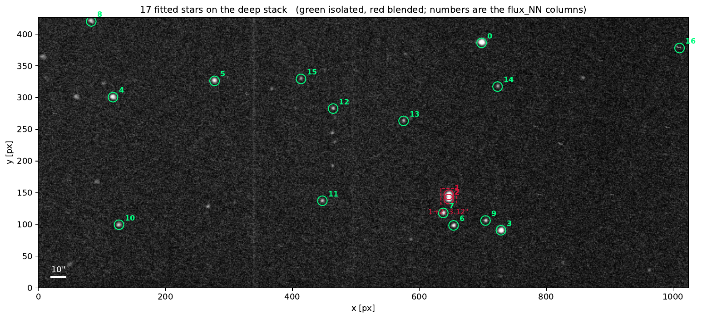
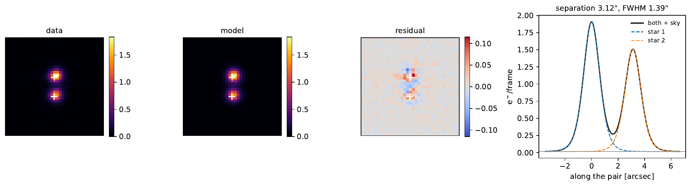
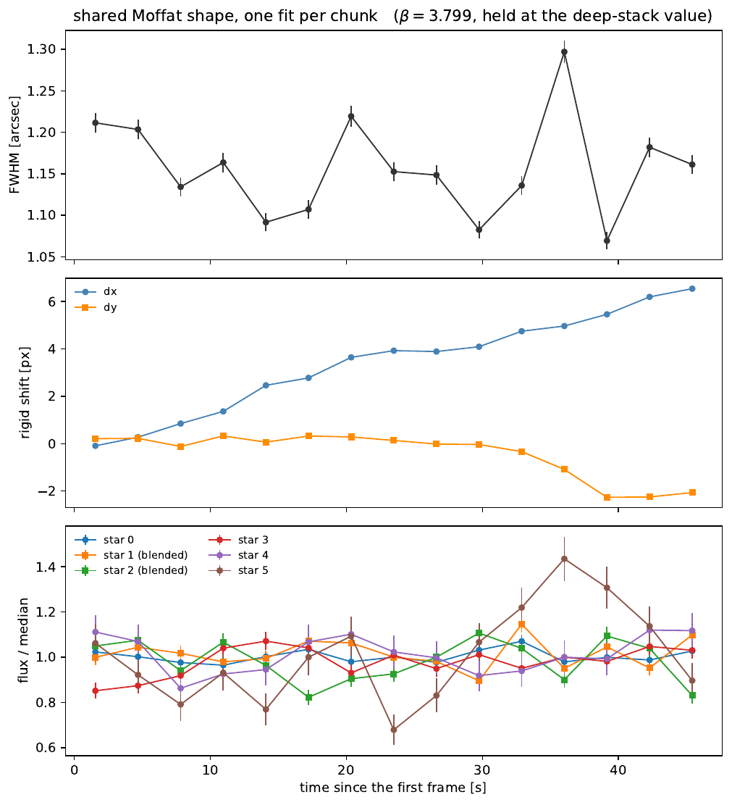

The pipeline has four steps, and you can see them
run_pipeline.py is a wrapper with no science of its own. It runs four programs in dependency order and nothing else. Ask it what it is about to do:
| Step | Program | Turns this into that |
|---|---|---|
| calibrate | embin_mcmc.py | frames → bias, read noise, EM gain, sky flux, and the optimal bin edges. Not in the default chain, see below. |
| bin | run_chunks.py | frames → one histogram cube and one flux map per chunk |
| astrometry | pesto_astrometry.py | flux maps → the same, with a WCS, plus a drift-corrected stack |
| photometry | embin_psf.py | flux maps + stack → a flux per star per chunk, blends deconvolved |
Each step fails independently, and that is the point. A failed astrometry leaves the binning products complete and correct — they simply have no WCS. A failed binning leaves the later steps with nothing to read.
1Calibrate the detector from your own frames
Section 3 of the settings file holds four numbers the rest of the toolkit treats as known. If you are on PESTO at the gain the defaults were measured at, skip this. Otherwise, measure them:
It pools the raw ADU of the first 64 frames over every pixel into one histogram — 28 million values — and samples bias, read noise, EM gain and the mean flux per pixel from it with emcee. The model is the closed-form Poisson–Gamma–Gaussian law, with the Poisson sum over electron number done exactly, so there is no nmax truncation anywhere in the fit.
It writes data_bin/mcmc_report.pdf: a typeset report with the posterior, the fit quality, the proposed bin edges, and the numbers already formatted to paste into sections 2 and 3.
Nothing applies those numbers for you. The calibration is not in the default chain because its output is not a file the other steps read: it is text you paste into the YAML. Wiring it to edit the configuration behind your back would silently change the calibration underneath every result you had already produced.
What the calibration found
On the test night, from 64 frames. Compare with the independent pesto_stats calibration in section 3: bias 303.6178, RON 6.8164, gain 71.0598.
Quote the inflated error bars the report prints, not the formal ones. With 28 million pixel values behind four parameters the formal width is 10⁻⁴ of each value, and no real EMCCD is a four-parameter object at that precision: χ²/ν comes out at 49.
2Bin the night, then put it on the sky
These two are the original pipeline and are covered in detail on page 1 and page 2. In one command:
The binning writes one embin_chunkNN.fits.gz cube and one _flux.fits.gz map per chunk, plus chunk_summary.fits, which holds every chunk's flux map and error map in one cube along with the times. The astrometry stacks those chunks with the drift taken out, solves the stack against Gaia, and writes astrometry_stack.fits.
Those two files — the summary and the stack — are exactly what the photometry step reads. Nothing else.
3Fit every star at once
The old light curve summed a fixed aperture around each source. That works right up to the moment two sources sit closer together than the aperture — which is exactly this field. TOI‑1452 has a companion 3.1″ away, about seven pixels, and no aperture wide enough to hold one of them excludes the other.

How it works
Every star gets the same isotropic Moffat, normalised to unit volume so that the coefficient multiplying it is the star's total flux in e−/frame — not a peak height and not the content of an aperture. The fit runs in two stages, and they are not the same fit:
- On the deep stack. FWHM and β shared, every star free in position and flux. This fixes the reference positions and measures β.
- On each chunk. β held at the stack value; the FWHM, a rigid (dx, dy) shift of the whole field, and one flux per star, all solved together against that chunk's own FLUX_ERR map.
Holding the shape and the positions makes the model linear in the fluxes, so they come from a weighted linear solve rather than from the optimiser. That is both faster and the whole reason the blend is not a problem.
The cross-term, explicitly
The stars are fitted together, not one after another. With the shape fixed, the data is a sum of profiles, and the normal matrix of that linear solve is
The off-diagonal element jk is the cross-term: the noise-weighted overlap integral of one profile with the other. It is not neglected and not approximated — it is a number the solve inverts. Two things follow at no extra cost. The fluxes are the pair that jointly explains the blended image, rather than each star's light plus a share of its neighbour's wing. And the inverse of that same matrix is the covariance, so each error bar already carries the penalty for not knowing exactly how the light was shared.

That is small, and it is the right answer: at 2.25 FWHM a Moffat has already fallen a long way. The value of doing it this way is not that the correction is large — it is that the size of the correction is now a measured number in the output rather than an assumption in a footnote. The full per-chunk correlation matrix is in the FLUXCORR extension.
Why β is measured once and then frozen
β sets how heavy the wings of the profile are, and the wings are exactly where a 64-frame chunk has nothing to say. At a sky flux of 0.017 e−/frame, a pixel a few FWHM from a star collects well under one electron in a whole chunk: its flux estimate is noise-dominated and biased low, because the per-pixel likelihood barely turns over.
A free β reads that bias as a genuinely narrow-winged PSF and runs away. It is not a subtle failure — fitted freely on this dataset, β hit its upper bound of 30 in ten chunks out of fifteen, with χ² still falling monotonically all the way there. That is the signature of a parameter the data cannot determine, not of a measurement.
So β is measured on the deep stack, which has fifteen times the frames and real signal in the wings, and reused. It is a property of the optics and the atmosphere, and it has no reason to change over 45 seconds anyway.
With beta_free on, a per-chunk β that lands on a bound is reported with a NaN error bar, so the failure is visible rather than silent.
What comes out
The per-chunk FWHM is consistently sharper than the stack, which is as it should be: the stack is the sum of chunks offset by the drift, so it is blurred by exactly the motion the fit measures. If it were not, something would be wrong with the alignment.
The files the photometry writes
| File | What it is |
|---|---|
| psf_report.pdf | The typeset report: method, the blend, why β is frozen, the star table, the chunk table, and how to read the output. |
| psf_photometry.fits | PHOT: one row per chunk. STARS: the star list. FLUXCORR: the per-chunk flux–flux correlation matrices. |
| psf_photometry.ecsv | The same table as plain text with units, openable in any editor. |
| psf_stars.reg | DS9 regions in image coordinates, one numbered circle per star, red for the blended pair. |
| psf_stars.yaml | One block per star: pixel position, RA, Dec, Gaia G, median flux, scatter, and who it is blended with. |
| figures/psf_finder.pdf | The finder chart above. |
| figures/psf_blend.pdf | The deblend cutout above. |
| figures/psf_photometry.pdf | FWHM, drift and light curves against time. |

χ²/ν sits near 0.79 in every chunk. That is not a good fit, it is a conservative error map: FLUX_ERR overestimates the noise by about 12 %. Both versions of the flux error are written out — the formal one straight from the error map, and flux_err_scaled_NN rescaled so this fit's χ² comes out at one. Which to believe is a judgement about the flux map, not about this fit.
Recipes
Options are forwarded only to the step they belong to, so a mistyped flag is an error in the wrapper rather than something silently ignored three modules down. python run_pipeline.py --help lists all of them, with the step table at the bottom.